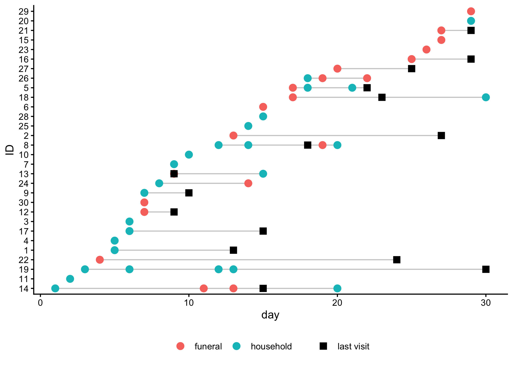
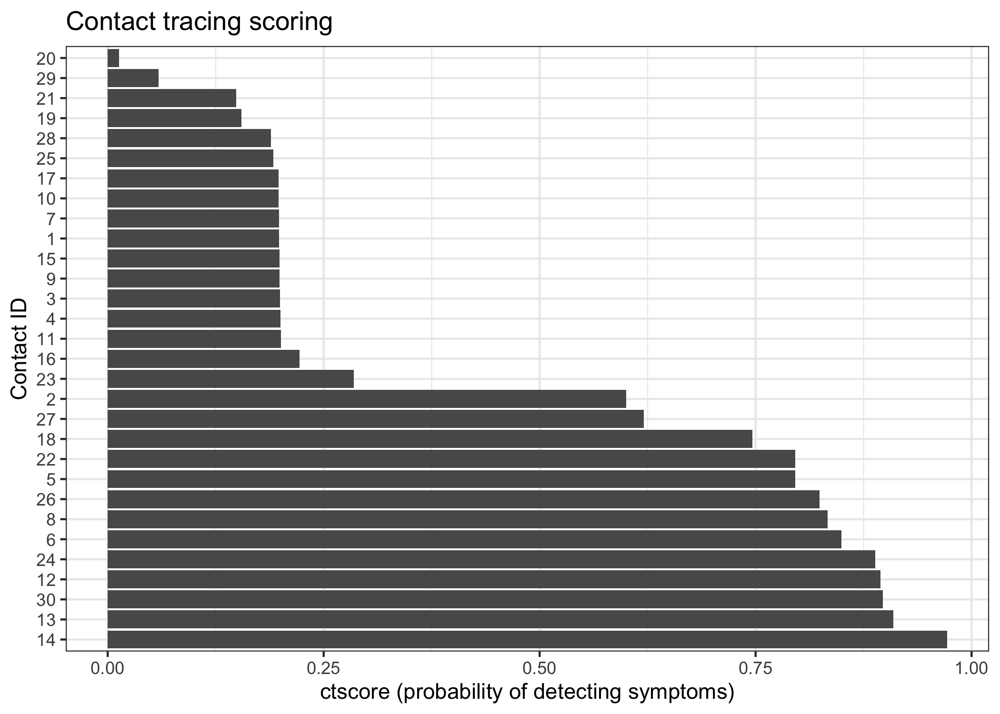

Worked example
In the following, we read a toy dataset included in the package, which contains simulated contact tracing data for 30 contacts. Each contact has one or more exposures, some of which led to infection. Data are stored inside an xlsx file distributed with the package, but in practice you would read your own data from a csv or xlsx file.
library(ctscore)
library(rio)
library(magrittr)
library(tibble)
library(dplyr)
#>
#> Attaching package: 'dplyr'
#> The following objects are masked from 'package:stats':
#>
#> filter, lag
#> The following objects are masked from 'package:base':
#>
#> intersect, setdiff, setequal, union
library(ggplot2)
## use the path to your own file in practice
path_to_file <- system.file("toy_ctdata.xlsx", package = "ctscore")
## read the data in
raw_data <- rio::import(path_to_file) %>%
tibble()
raw_data
#> # A tibble: 46 × 7
#> contact_id date type location last_visit infected onset
#> <dbl> <dbl> <chr> <chr> <dbl> <lgl> <dbl>
#> 1 1 5 household new_city 13 FALSE NA
#> 2 2 13 funeral new_city 27 FALSE NA
#> 3 3 6 household local_town NA FALSE NA
#> 4 4 5 household new_city NA FALSE NA
#> 5 5 17 funeral hotspot 22 TRUE 23
#> 6 5 18 household hotspot 22 TRUE 23
#> 7 5 21 household hotspot 22 TRUE 23
#> 8 6 15 funeral local_town NA FALSE NA
#> 9 7 9 household local_town NA FALSE NA
#> 10 8 14 household hotspot 18 TRUE 24
#> # ℹ 36 more rowsEach row corresponds to a reported exposure. The file contains the following information:
-
contact_id: a unique identifier for each contact -
date: the date of exposure, indicated as an integer since the first exposure; in practice, this could be actual dates in the format YYYY-MM-DD -
type: the type of exposure; here, either “household” or “funeral” -
location: the location of the contact; here, either “new_city”, “local_town”, or “hotspot”; these would be actual names of places in practice -
last_visit: the date of the last visit to the contact, where they exhibited no symptoms; if the contact has not been visited yet, this isNA -
infected: the simulation truth, indicating whether the contact was infected or not; this is not known in practice, but is included here for demonstration purposes -
onset: the simulation truth, indicating the day of symptom onset for infected contacts; this may is not known in practice, but is included here for demonstration purposes
Now that we have imported the data into R, we need to convert them to a ctdata object using make_ctdata() (see ?make_ctdata for details).
Infection probabilities (argument infection_proba) can be estimated from previous contact tracing data, from the literature, or by expert opinion. Here, we assume that household exposures have a 20% probability of infection, while funeral exposures have a 90% probability of infection.
x <- make_ctdata(
contact_id = raw_data$contact_id,
date = raw_data$date,
type = raw_data$type,
location = raw_data$location,
infection_proba = list(household = 0.2, funeral = 0.9),
last_visit = raw_data$last_visit
)
head(x)
#> contact_id date type location last_visit infected onset
#> 1 1 5 household new_city 13 NA NA
#> 2 10 10 household local_town NA NA NA
#> 3 11 2 household new_city NA NA NA
#> 4 12 7 funeral hotspot 9 NA NA
#> 5 13 9 funeral local_town 9 NA NA
#> 6 13 15 household local_town 9 NA NA
#> infection_proba
#> 1 0.2
#> 2 0.2
#> 3 0.2
#> 4 0.9
#> 5 0.9
#> 6 0.2
class(x)
#> [1] "ctdata" "data.frame"Smaller datasets can be visualised using plot():
plot(x)
Next, we need to specify incubation time distribution, which can be provided either as a vector of probabilities (giving p(0 day), p(1 day), p(2 days) …) or as a distcrete object as returned by distcrete::distcrete(). Here, we generate a dummy incubation time distribution as a discretized Gamma:
incub <- distcrete::distcrete(
"gamma",
interval = 1,
shape = 3.5,
scale = 2.5, w = 0
)
plot(
incub$d(0:30), type = "h", lwd = 6, lend = 1,
xlab = "Days since infection",
ylab = "Probability of symptom onset",
main = "Incubation time distribution",
col = 2
)
We can now calculate the ctscore using the ctscore() function, the current date is day 31 (again, this could be a real date in practice, in YYYY-MM-DD format):
score <- ctscore(x, incub, current_date = 31)
score
#> 1 10 11 12 13 14 15
#> 0.19854218 0.19772316 0.20028407 0.89463558 0.90958819 0.97174690 0.19870824
#> 16 17 18 19 2 20 21
#> 0.22232470 0.19754793 0.74628901 0.15502167 0.60000140 0.01314619 0.14895995
#> 22 23 24 25 26 27 28
#> 0.79589928 0.28480854 0.88870951 0.19158821 0.82388155 0.62067571 0.18872827
#> 29 3 30 4 5 6 7
#> 0.05915784 0.19969489 0.89728078 0.19991568 0.79604599 0.84927722 0.19844927
#> 8 9
#> 0.83344774 0.19871356score indicates, for each contact, the probability that a visit today will lead to detecting a new case.
For convenience, we can ask ctscore to return results in other formats through the argument out_type:
“ctdata”: returns a
ctdataobject with only individual data and scores (stripping exposures); this is the most useful for prioritising individuals for visits“data.frame”: returns a
data.framewith contact IDs and scores“ctdata_full”: a
ctdataobject with an additional column for the scores appended to the exposure database
## `ctdata` with individual info and scores, sorted by score
res <- ctscore(x, incub, current_date = 31, out_type = "ctdata") %>%
arrange(desc(score))
head(res)
#> contact_id location last_visit infected onset score
#> 1 14 hotspot 15 NA NA 0.9717469
#> 2 13 local_town 9 NA NA 0.9095882
#> 3 30 local_town NA NA NA 0.8972808
#> 4 12 hotspot 9 NA NA 0.8946356
#> 5 24 hotspot NA NA NA 0.8887095
#> 6 6 local_town NA NA NA 0.8492772
## ctdata object with scores appended, sorted by score
res_full <- ctscore(x, incub, current_date = 31, out_type = "ctdata_full") %>%
arrange(desc(score))We can use a simple plot to visualise the scores for each contact, which can be useful for prioritising visits:
## some wrangling needed to keep the order of contacts in the plot
res %>%
mutate(contact_id = factor(contact_id, levels = unique(contact_id))) %>%
ggplot(aes(x = score, y = contact_id)) +
geom_col() +
theme_bw() +
labs(x = "ctscore (probability of detecting symptoms)",
y = "Contact ID",
title = "Contact tracing scoring")
We can look at the first and last scores to understand how the scoring system works.
head(res_full)
#> contact_id date type location last_visit infected onset
#> 1 14 1 household hotspot 15 NA NA
#> 2 14 11 funeral hotspot 15 NA NA
#> 3 14 13 funeral hotspot 15 NA NA
#> 4 14 20 household hotspot 15 NA NA
#> 5 13 9 funeral local_town 9 NA NA
#> 6 13 15 household local_town 9 NA NA
#> infection_proba score
#> 1 0.2 0.9717469
#> 2 0.9 0.9717469
#> 3 0.9 0.9717469
#> 4 0.2 0.9717469
#> 5 0.9 0.9095882
#> 6 0.2 0.9095882The first contact (ID 14) has the highest score because they had multiple exposures, including several funeral exposures, and were last seen 16 days ago (on day 15, current day is 31), so there was ample time for symptoms to have appeared since then. The second contact (ID 13) has a high score for the same reasons: multiple exposures, and a last visit a long time ago.
tail(res_full)
#> contact_id date type location last_visit infected onset
#> 41 19 6 household hotspot 30 NA NA
#> 42 19 12 household hotspot 30 NA NA
#> 43 19 13 household hotspot 30 NA NA
#> 44 21 27 funeral hotspot 29 NA NA
#> 45 29 29 funeral local_town NA NA NA
#> 46 20 29 household hotspot NA NA NA
#> infection_proba score
#> 41 0.2 0.15502167
#> 42 0.2 0.15502167
#> 43 0.2 0.15502167
#> 44 0.9 0.14895995
#> 45 0.9 0.05915784
#> 46 0.2 0.01314619The very last contact (ID 20) has a low score because of a single ‘weak’ exposure only 2 days ago, so that it is unlikely that the individual has been infected, and if they have been, it is unlikely that they have developed symptoms yet.
The second last contact (ID 29) reported a high-risk (funeral) exposure, but this was very recent (day 29) so they are unlikely to show symptoms just yet.
The situation is the same for the third last contact (ID 21), whose funeral exposure is yet too recent to show symptoms just yet, if they were infected.
The fourth last contact (ID 19) has reported multiple weak exposures, but they were last visited yesterday and showed no symptoms, so they are unlikely to be infected.